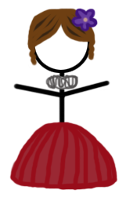

Description
Like word games? Love Shakespeare? Test your knowledge of the Bard and learn new quotes with Shakespearean hangman, the hangman game loaded with quotes from Shakespeare's plays and poems. Play alone or face off with a friend to see who knows the Bard the best!
Features
- Single-player mode and competitive mode
- Three difficulty levels
- Player profiles to track your scores
- Shakespeare-themed graphics and sounds
- Loads of Shakespeare quotes, from the most famous to the most obscure
Screenshots
Authors and Contributors
Shakespearean Hangman is the work of Katherine Thayer (@KatherineThayer), Matt Hendrickson(@MatthewHendy), and Cassie Schwendiman (@cschwendiman).